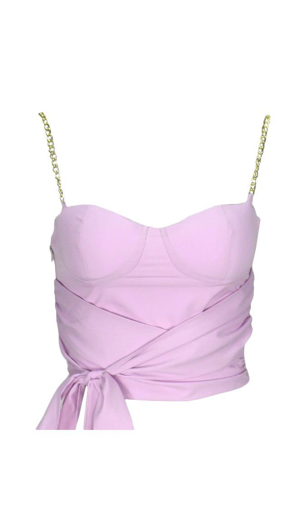
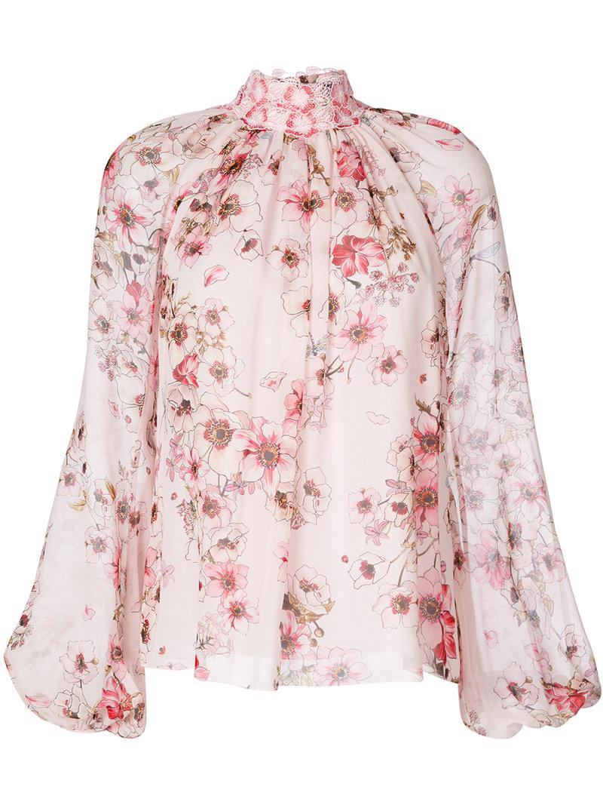
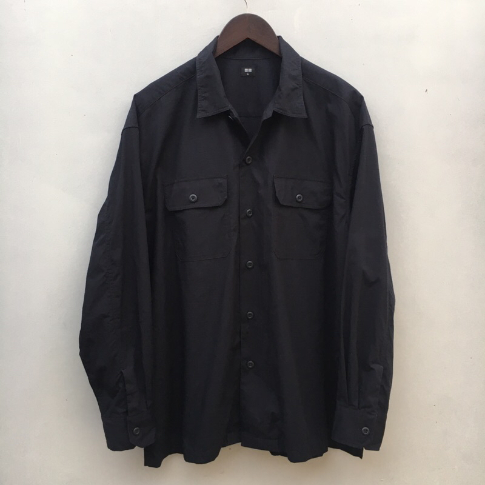
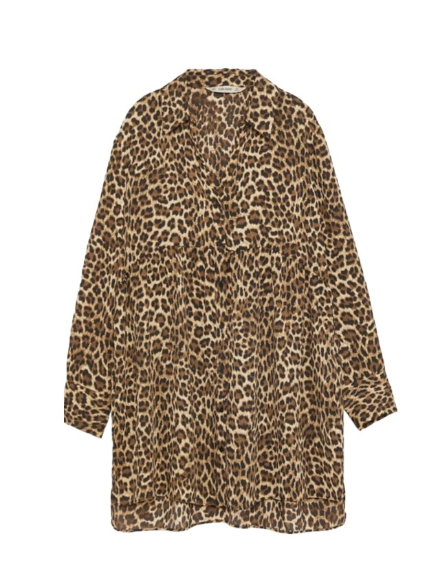
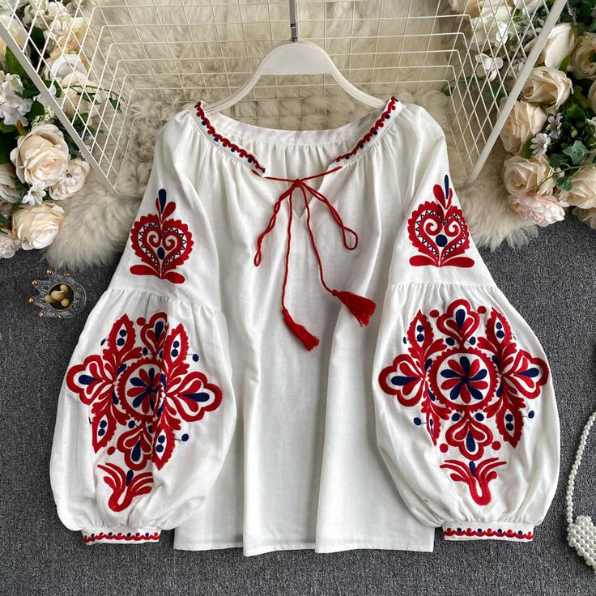

Tahun 2025 akan membawa berbagai tren menarik dalam dunia fashion, terutama untuk atasan wanita. Dari desain yang berani dan penuh warna hingga material yang inovatif, pilihan atasan di tahun depan akan memberikan banyak kebebasan untuk bereksperimen dengan gaya.
Beberapa tren yang diprediksi akan mendominasi seperti sentuhan futuristik, animal print yang kembali populer, dan atasan yang santai. Berikut 5 tren atasan wanita tahun 2025!
1. Crop Top Pastel
Crop top dengan warna pastel diprediksi akan menjadi pilihan favorit anak muda. Nyaman dipakai dan cocok dipadukan dengan jeans high-waist atau rok mini.
2. Blouse Floral
Motif bunga selalu timeless. Tahun 2025 blouse floral hadir dengan potongan modern, cocok untuk tampilan formal maupun kasual.
3. Kemeja Oversized
Nyaman dan stylish, kemeja oversized akan jadi favorit banyak perempuan. Bisa dipadukan dengan legging, celana pendek, atau bahkan dijadikan outer.
4. Atasan Animal Print
Animal print kembali populer di 2025! Leopard, zebra, atau python print akan menambah kesan bold dan percaya diri dalam penampilan.
5. Boho Chic Blouse
Bohemian style tetap jadi tren dengan blouse longgar, detail renda, dan motif etnik. Gaya ini memberikan kesan santai dan bebas.